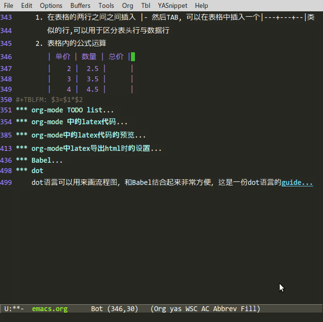

Emacs笔记
Table of Contents
- 1. emacs大杂烩
- 1.1. 编译emacs24
- 1.2. emacs各种设置与注意事项
- 1.3. auto-complete complete
- 1.4. grep grep
- 1.5. isearch isearch
- 1.6. dired dired
- 1.7. ibuffer的快捷键 ibuffer
- 1.8. cua-mode以及矩形操作的快捷键 cua
- 1.9. mutiple cursors多光标 multiple cursor
- 1.10. ace-jump-mode ace
- 1.11. expand region region
- 1.12. paredit paredit
- 1.13. ido(Interactively Do Things) ido
- 1.14. helm(a good alternative to ido) helm
- 1.15. w3m w3m w3c
- 1.16. ansi-term shell term
- 1.17. magit magit
- 1.18. 我设置的快捷键以及我常用的快捷键，函数 shortcut
- 1.19. emacs导出pdf的中文支持 pdf chinese
- 1.20. emacs的奇淫技巧 face
- 1.21. 我写的一些命令
- 1.22. elpa elpa
- 1.23. emacsclient emacsclient server
- 1.24. org-mode org
- 2. emacs让人困惑的问题
1 emacs大杂烩
这是我的emacs配置：https://github.com/yuyang0/emacs.d ,我在purcell 的配置的基础 上添加了一些我自己的设置.
1.1 编译emacs24
去官方下载emacs24.4的包。
sudo apt-get install libxml2-dev libxslt-dev python-dev libncurses-dev sudo apt-get install build-essential texinfo libx11-dev libxpm-dev sudo apt-get install libjpeg-dev libpng-dev libgif-dev libtiff-dev libgtk2.0-dev ./configure make sudo make install
要特别注意libxml2-dev， 这个包部安装，那么eww无法使用。
1.2 emacs各种设置与注意事项
1.2.1 emacs在英文系统的输入法问题
mv /usr/bin/emacs /usr/bin/emacs.raw gedit /usr/bin/emacs
在文件中输入以下代码:
#!/bin/bash export LC_CTYPE=zh_CN.utf-8 /usr/bin/emacs.raw "$@"
1.2.2 交换ControlL与Capslocks
通过 xev | grep 'keycode'得到键码，然后输入以下文件:
remove Lock = Caps_Lock remove Control = Control_R keycode 66 = Control_R NoSymbol Control_R keycode 105 = Caps_Lock NoSymbol Caps_Lock add Lock = Caps_Lock add Control = Control_R
保存为.xmodmap，然后运行xmodmap .xmodmap
1.3 auto-complete complete
一个补全的包,实际可以看作是一个补全选项的展示界面,支持很多后端,这是文档
- ac-trigger-commands: 一个变量用来指定启动自动补全的命令,默认是self-insert-command
- TAB(ac-expand):有几种行为:如果只有一个候选项,那么直接补全,如果有多个候选 项而且候选项有相同的部分,那么补全相同的部分,如果不是以上两种情况,那么就 在各个候选项上循环
- RET(ac-complete) : 会补全当前的候选项,如果该候选项有action(如yas),那么执 行该action
- M-n(ac-next)
- M-p(ac-previous)
有用的变量:
- ac-auto-start: 如果设置为nil, 那么当运行ac-trigger-command中指定的命令时,不
会启动自动补全,如果为正数值,那么只有但你输入的字符大于该值时才自动补全,比
如
(setq ac-auto-start 4),那么只有你输入了4个字符时才会启动自动补全 - ac-auto-show-menu: 自动弹出显示补全菜单,可以设为nil,或者一个数值(延迟妙 数)
- ac-completing-map: 显示了补全菜单后的map,可以设置快捷键
- ac-dwim: dwim ⟶ do what I mean:一般设为nil -After selecting candidates, TAB will behave as RET -TAB will behave as RET only on candidate remains
1.4 grep grep
如果是想搜索当前buffer，那么你可以是occur，如果你想搜索多个文件，那么可以使 用grep，推荐两个命令
- lgrep：只会搜索当前目录(不搜索子目录)
- rgrep：它会递归搜索子目录
wgrep包可以是emacs在grep buffer中直接修改文件内容
- C-c C-p: 在grep buffer中只要按该快捷键，就可以在grep buffer直接编辑文件
- C-c C-k: 放弃所有修改
- M-x wgrep-save-all-buffers
1.5 isearch isearch
Increment Search.当你搜索时,你每输入一个字符,它会实时的向你展示基于目前的输 入所得到的所有匹配项,并自动将光标跳到第一个匹配项 C-x C-x:可以在isearch之后回到原来的位置
1.6 dired dired
dired是一个强大的文件管理器,dired的标记方式有很多种，如标记删除（D标记，用于 删除）， 如标记为*（m所做的标记就是*标记），默认如果有被*标记的文件，那么所 有的文件操作就是在这些标记的文件上进行的，否则就在当前行代表的文件上进行操作， 当然还可以有其他类型的标记如t标记，k标记，只是这些标记没有快捷键，一般D标记 和*标记用的多，其他标记一般用于临时的转换一下。*c命令可以修改标记，eg：*c D t将D标记修改为t标记，*c t *将t标记修改为*标记
- "#": 标记所有自动保存的文件（D标记）
- ～：标记所有的备份文件（D标记）
- &： 标记所有的垃圾文件(D标记)
- d: mark D标记
- x：执行删除
- m: mark *标记
- t: 将所有*标记的文件变为未标记，所有未标记的变为*标记
- **：标记所有可执行文件
- *@：标记所有符号链接
- *s: 标记所有文件
- */：标记所有目录（不包括. ..)
- %m or *%: 正则匹配文件名
- %g：正则匹配所有文件的内容
- u: unmark
- 常用的文件操作：
- U: unmark all
- D: 立即删除
- R：rename
- C：copy
- A: 正则搜索
- Q：正则替换
- Z：解压文件
- L：把lisp文件加载进emacs
- B：byte compile
- O：chown
- G：chgrp
- M：chmod
- +：create a directory
- !: 可以显示打开文件的命令（对pdf等文件不要RET）
1.6.1 wdired(批量改名)
C-x C-q : (wdired-change-to-wdired-mode) 进入wdired mode, 进入后就可以像普 通的buffer一样编辑文件名(用multiple cursor来编辑多个文件名), 完成后C-c C-c 或者C-x C-s
1.7 ibuffer的快捷键 ibuffer
- p：prev
- n: next
- m：mark
- u: unmark
- t: mark all
- **: unmark all
- x: kill the marked buffer or current buffer if no buffer marked
- S: save the marked buffer or current buffer if no buffer marked
- D: same as 'x'
- O: 在所有mark的buffer中正则搜索
- U: 在所有mark的buffer中替换
- Q: 在所有mark的buffer中query，replace
- /m: 按主模式过滤
- /n: 按名字过滤，可以只输入一部分
- //: 撤销过滤，全部显示
- /p: 多重过滤时撤销上一层过滤
- /f: 过滤filename，与/n类似
1.8 cua-mode以及矩形操作的快捷键 cua
- M-x cua-mode : enable cua-mode
- C-RET: 激活矩形操作，然后就可以常规移动光标来进行列编辑
- C-v : past rectangle
1.9 mutiple cursors多光标 multiple cursor
- C-<: mc/mark-previous-like-this
- C->: mc/mark-next-like-this
- C-c <: mc/mark-all-like-this (上面三项功能以word为单位，必须先mark-word)
- C-c c a:在所有行的开头加入光标
- C-c c e:在所有行的结尾加入光标
- C-c c c:在所有的行加入一个光标(上面的三项功能以行为单位，必须先mark数行)
在multiple cursors中isearch是失效的,为了实现C-s, C-r增量搜索,有以下两种方法:
(defvar jc/mc-search--last-term nil) (defun jc/mc-search (search-command) ;; Read new search term when not repeated command or applying to fake cursors (when (and (not mc--executing-command-for-fake-cursor) (not (eq last-command 'jc/mc-search-forward)) (not (eq last-command 'jc/mc-search-backward))) (setq jc/mc-search--last-term (read-from-minibuffer "Search(regex): "))) (funcall search-command jc/mc-search--last-term)) (defun jc/mc-search-forward () "Simplified version of forward search that supports multiple cursors" (interactive) (jc/mc-search 'search-forward-regexp)) (defun jc/mc-search-backward () "Simplified version of backward search that supports multiple cursors" (interactive) (jc/mc-search 'search-backward-regexp)) (add-hook 'multiple-cursors-mode-enabled-hook (lambda() (local-set-key (kbd "C-s") 'jc/mc-search-forward) (local-set-key (kbd "C-r") 'jc/mc-search-backward)))
上述代码放入配置中,就可以开启增量搜索, 还有一种方法是使用phi-search
1.10 ace-jump-mode ace
类似于火狐的vim插件，输入一个head char，就会在所有匹配的地方放入一个字母
- C-; ：ace-jump-char-mode
- C-: : ace-jump-word-mode
1.11 expand region region
这个包可以根据程序的语法结构来选定区域
- C-= : 不断的按该快捷键,会使选定的区域不断的扩展,而且只扩展到语法层面的父 结构中,
1.12 paredit paredit
该模式下你不能直接编辑括号,而只能通过命令来调整程序结构,主要用于lisp编程
- M-r: 这个命令可以将紧跟着光标后的sexp( 不是当前的sexp, 所以建议将光标放在
要操作sexp的左括号的前面)在树中的位置向上提一层,比如对
let中的sexp应用 该命令,那么就可以直接删除(let ([] ...))因此该sexp在语法树中的位置就上 升了一层,默认该命令会删除该sexp平级的兄弟sexp. 可以通过C-u来指定要将跟着的 几个sexp提一层,默认是一个 - M-( : 会用新建() 将跟着光标的sexp包起来
- C-) C-<right> : 会将光标所在的当前表达式的紧挨着的兄弟表达式吞进来
- C-} C-<left> : 将当前sexp包含的最后一个sexp移出去, 可以看作是C-)的逆命令
- M-S : 将一个sexp分成两个sexp,效果就是在光标处添加 ")("
- M-J : 将两个sexp合并成一个sexp, 比如
(a b) (c d)变成(a b c d)注意 光标要放在两个sexp之间,上例中要放在(a b)与(c d)之间
1.13 ido(Interactively Do Things) ido
使用 C-x b 来切换 buffer,或者使用 C-x C-f 来打开文件时,会自动在
minibuffer 展示可能的补全项,下面是几个快捷键:
- C-s:后退
- C-r: 前进
当打开文件时(C-x C-f)时,有以下几个特殊的快捷键
- C-f: 进入emacs内置的find-file
- C-p: 会启动部分匹配，而前面是严格的前缀匹配
- C-t: 正则表达式匹配 eg:*.py$匹配所有python源文件
- C-d: 会使用
dired打开当前目录 - C-j: 创建新文件(因为当前输入的字符有匹配项时,默认是打开匹配项)
- //: 进入根目录
- ~/: 当前用户的家目录
- M-p: history中的前一条目录
- M-n: history中的后一条目录
1.13.1 用于编程的命令
- ido-read-file-name: 可以用来读取一个文件名
- ido-read-directory-name: 可以用于获得一个目录名
- idio-read-buffer: 可以用来获得一个buffer name
- ido-completion-read: 这是一个通用的补全命令,需要提供一个列表
1.13.2 smex smex
构建于 ido 之上, 在你使用 M-x 运行命令时会提供自动补全
1.14 helm(a good alternative to ido) helm
一个比较好的可以替换ido,smex的包,功能非常强大, 基本上emacs中出现选择的地方, 他都可以用,比如打开文件,切换buffer,kill buffer, M-x等等,下面来说说它的的几 个重点功能
1.14.1 打开文件
- TAB :打开Action buffer, 对每一个文件可以有许多动作, 比如copy, 比如用外部 程序打开,那么这些操作都在这个action buffer中
- C-z: 扩展当前的候选项, 比如你的当前候选项是一个目录, 那么C-z就会进入该目
录,不要按
Enter, 因为那会以dired打开这个目录 - M-<space> : mark 当前的文件
- C-<backspace>: 会禁止自动补全,这在创建新文件与新目录时特别有用(因为如果 新的文件名与现在存在的文件名很相似的话,那么helm会自动补全为已存在的文件 或目录,因此你也就无法创建新目录)
- 新建目录: 在
minibuffer中正常输入,只是最后要以 / 结尾, helm会提示创建 新目录 - 复制文件: 先mark文件,然后TAB 选择copy file, 选择目的地就好
- 移动文件: 和复制文件类似
1.14.2 ediff ediff
第一个文件TAB上选择ediff action,自动弹出第二个helm-find-files选择第二个文 件, 强力推荐
1.14.3 grep(increment grep) grep
helm-do-grep : helm中执行grep的命令,你也可以使用 helm-find-files然后TAB 选择grep, 如果使用 C-u M-x helm-do-grep, 那么就会递归的在目录中搜索
1.14.4 locate locate
M-x helm-locate: 使用操作系统的locate所产生的数据库文件来搜索文件
1.15 w3m w3m w3c
w3m 是一个文本浏览器，它不支持CSS与js，非常适合浏览文本很多的页面，以及避免 在emacs与firefox切换带来的烦恼。。
links
- g: Prompt for a url in minibuffer (w3m-browse-url)
- G: same as g excepte it open a new session(a new tab)
- R: reload the page
- S: search engion
- H: goto home page
- B: go back(history)
- N: go next(hostory)
- u: display the under the point in the echo area
- RET: Display the page pointed by the link under point (w3m-view-this-url)
- \[: move point to previous form
- \]: move point to next form
- TAB: move point to next link
- M-TAB, S-TAB: move point to previous link
- d: download thee url under the point
- M-d: Download the url
scroll
- SPC: scroll downwards
- >: scroll to the right
- <: scroll to the left
- DEL: scroll upwards
bookmarks
- v: show all bookmarks
- a: add current url to bookmarks
- M-a: Add the url under point to the bookmark.
- C-k: kill a bookmark
- E: edit bookmark
move in page
- hjkl: like vim
switch tabs
- C-c C-n: next tab
- C-c C-p: previous tab
- C-c C-t: new tab
images
- I: Display the image under point in the external viewer.
- M-i: Save the image under point to a file.
- t: Toggle the visibility of an image under point
- T: Toggle the visibility of all images
- M-T: turn off to display all images
- M-[: zoom in an image on the point
- M-]: zoom out an image on the point
1.16 ansi-term shell term
终端模拟器,基本上terminal的所有功能.
- C-c C-j: 进入line mode， 可以复制
- C-c C-k: 回到character mod
1.17 magit magit
1.18 我设置的快捷键以及我常用的快捷键，函数 shortcut
- M-x browse-url: 通过浏览器打开当前url
- C-g C-/: redo
- C-x C-v: find-alternate-file(fresh buffer)
- C-x C-m: 替代M-x,按M很别扭
- M-c : capticalize-word
- M-u : upcase-word
- C-x C-u : upcase-region
- M-l : downcase-word
- C-x C-l: downcase-region
- C-c p: 复制粘贴一行或者选中的region
- C-c j: 将当前行与上一行合并成一行
- M-up: Shift lines up
- M-down: Shift lines down
- M-x occur: 创建一个新的buffer，然后将当前buffer，所有匹配regex的内容显示其 中,进入该buffer，enter就可以跳转
- M-x imenu：可以根据类型跳转（变量，函数,include等等）
- C-k: kill the current line
- C-o: new line and indent,like the 'o' in vim
- M-;: comment or uncomment the region
- M-j: 这个在多行注释时,可以换行,换行时会在行首自动添加comment-prefix字符(C 语言是*), 如果使用C-j或者RET就不会添加该字符
- C-/: undo (same as C-x u and C-_)
- C-c d: translate the word using sdcv
- C-c f: 迭代的搜索字符，eg：C-c f g会移到第一个g，在按g移到 第二个g
- % : jump to the matched parenthesis
- C-c -: fold the code
- C-c =: unfold the code
- C-M-f: 表达式的首部
- C-M-b:
- C-M-a: 函数的首部
- C-M-e：
- C-x backspace: 删除到行首
- C-M-h: 标记一个函数
- M-u: 一个字改为大写
- M-l：一个字改为小写
- C-x C-u：region to uppercase
- C-x C-l：区域小写
- C-t：将光标前后的字符交换
- C-x C-t: 光标所在行与上一行交换
1.19 emacs导出pdf的中文支持 pdf chinese
org-mode默认的导出系统对中文支持不好,我参考这篇文章, 将导出中文pdf的方法总结如下:
安装textlive,如果是ubuntu,运行以下命令:
sudo apt-get install texlive texlive-xetex textlive-latex-extra
textlive-latex-extra一定要装,不装会有File `wrapfig.sty' not found.的错误
在emacs配置文件中添加
;; org-mode < 8.0 (setq org-latex-to-pdf-process '("xelatex -interaction nonstopmode %f" "xelatex -interaction nonstopmode %f")) ;; org-mode 8.0 (setq org-latex-pdf-process '("xelatex -interaction nonstopmode %f" "xelatex -interaction nonstopmode %f"))
在org文档的开头部分添加:
#+LATEX_HEADER: \usepackage{xeCJK} #+LATEX_HEADER: \setCJKmainfont{SimSun}- 找不到 【SMIKAI.TTF】字体的错误，参考这篇文章
1.20 emacs的奇淫技巧 face
- M-x flush-lines RET ^$ RET :删除所有的空行（正则匹配）
- M-x list-faces-display: 显示faces，在很多需要颜色，字体样式的命令中需要face参数
- 绑定快捷键时用C-h k查询得到的内容可以直接放在kbd后
- indent-region可以格式化所有的代码
1.21 我写的一些命令
1.21.1 短网址 dwz tinyurl
使用百度的dwz.cn(之所以不用t.cn, 是因为它的api要求app key,比较麻烦)来缩短网 址, 会自动将得到的短网址插入当前buffer, 依赖request, emacs24可以通过 M-x package-install request安装
(require 'request) (require 'json) (defun dwz-url-shorten (long-url) "shorten url with dwz.cn" (interactive (list (read-string (format "long url (%s): " (thing-at-point 'url)) nil nil (thing-at-point 'url)))) (request "http://dwz.cn/create.php" :type "POST" ;; :data '(("url" . long-url)) :data (format "url=%s" long-url) ;; :data "key=value&key2=value2" ; this is equivalent :parser 'json-read :success (function* (lambda (&key data &allow-other-keys) (let ((tinyurl (assoc-default 'tinyurl data)) (url-boundaries (bounds-of-thing-at-point 'url))) (progn (message "%S" tinyurl) (if url-boundaries (goto-char (cdr url-boundaries))) (insert " " tinyurl " ")))))))
我写了一个包url-shortener ,你可以通过 elpa 安装,这个包支持 dwz.cn,126.am,bit.ly,goo.gl.
1.22 elpa elpa
1.22.1 proxy(goagent代理) proxy
(setq url-proxy-services '(("no_proxy" . "work\\.com") ("http" . "localhost:8087")))
1.23 emacsclient emacsclient server
使用emacs server配合emacsclient可以很大程度上解决emacs启动慢的烦恼,启动 emaca server的方法有两种:
- shell 中运行 emacs –daemon
- 启动的emacs中运行
(server-start)命令
我个人在桌面环境中喜欢第二种方法,也就是先打开一个emacs窗口作为server端,以后 在打开文件时都使用emacsclient,在emacsclient使用过程中有几个注意事项(server 创建的frame称为 Server Frame,emacsclient创建的Frame称为 Client Frame):
- emacsclient创建frame来打开文件时,它创建一个server buffer,如果你在 Client Frame中编辑完成,使用C-x C-c来退出该 Client frame,那么该server buffer就会 从server端删除,但server不会退出
- 如果你直接在server端的 Server Frame中编辑server buffer,如果编辑完成那么 你可以按C-x # 来kill掉该buffer,同时也会让对应的emacsclient创建的 Client Frame退出
1.24 org-mode org
org-mode是一个神器,有许多强大的功能
1.24.1 org-mode的快捷键与命令
- org-w3m-copy-for-org-mode: 在w3m中可以带链接，图片拷贝到org中（先选中region）
- tab，S-tab
- C-c C-n: next tiltle
- C-c C-p: prev tilte
- C-c C-f: 平级的上一个标题
- C-c C-b：平级的下一个标题
- C-c C-u：上一级标题：next
- M-RET : 插入同级标题
- M-S RET：插入一个同级的TODO标题
- M-LEFT/RIGHT: 标题升/降级
- M-S-LEFT/RIGHT：子树升/降级
- C-c*：将本行设置为标题
- C-c C-l: insert a link
- C-c C-o: open a link
- C-c C-c : 当在标题上时,可以用来插入标签
- C-c C-q : 为当前标题插入标签
- C-c \ : org-match-sparse-tree
内容元数据及其快捷键：
- <v tab: begin\verse 区域内换行
- <s tab: begin\src 区域内为代码 按 C-c C-' 进入主模式编辑，在按退出
- <e tab: begin\example 例子，每行以：开始
- <q tab: begin\quote 区域左右都会留出缩进，用于引用
- <c tab: begin\center 居中区域
- <l tab: begin\latex
- <h tab: begin\html 嵌入html
- <a tab: begin\ascii
1.24.2 org-mode的一些格式化语法
- 链接: "【【link】【descripter】】"（用英文的方括号）
- org-mode能自动识别链接，如http，file等
- 有序列表；1. 2. 3.
- 无序列表：*，+，-开头都可以
- 注解的格式：方括号+数字，或者方括号+fn+数字 C-c C-c可以在注解与正文之间跳转
(下面的格式，开头结尾必须都是空格或标点)
- 粗体(): *粗体
- 斜体(): /斜体
- 删除线(\+):
删除线 - 下划线(\_): 下划线
- 下标：H2 O(会将\后的字符串加上下标，空格为截止符)
- 上标：E=mc2 (同上)
- 等宽字:
pair?或者pair?在文章中插入一小段代码或者变量时很有用(可以 突出重点)
1.24.3 表格
- 基本使用
在某一行的顶格输入‘|’，然后输入第一行第一列，在输入‘|’，接着第一行第二 列，依次类推，完成后tab，会将当前行对齐并为你创造表格的下一行，tab和 S-tab可以在表格中正向或者反向的移动，在表格的空白项中输入数字eg:<6>则 限定为6个字符长，多余的部分会隐藏，用C-c C-c可以展开
- 技巧
- 在表格的两行之间之间插入 |- 然后TAB, 可以在表格中插入一个|—+—+–|类 似的行,可以用于区分表头行与数据行
表格内的公式运算
单价 数量 总价 2 2.5 5. 3 3.5 10.5 4 4.5 18.  注意$1 代表第一列, $2代表第二列, 一般表格会自动计算,如果要强制自动计算 可以使用C-u C-c C-c或者M-x org-table-recalculate-buffer-tables
1.24.4 org-mode TODO list
在一个标题上按shift+left/right，C-c C-t可以设置todo list的状态
1.24.5 org-mode 中的latex代码
为了在org-mode中高亮latex代码,同时使latex能在html以及pdf中都能生效,不要使用
#+BEGIN_LaTeX #+END_LaTeX
上面的代码不能高亮latex代码,同时它只在导出pdf时有效,所以你应该使用
#+BEGIN_SRC latex :exports results :results value raw
\begin{equation}
P(X=i) = \frac{e^{-\lambda}\lambda^i} {i!}
\end{equation}
#+END_SRC
注意后面的results选项,它会将裸的latex代码直接放入导出的html或者tex文件,org-mode可以自动处理这种裸的latex 代码,这种裸的latex代码,可以有以下这几种形式:
行内latex代码有下面两种界定符(如果你的latex代码有\lambda这类代码也可以不要界定符,org-mode会自动识别):
$\lambda = np$ ==> $与代码之间不要有空格,第二个$后要跟空格,标点符号或破折号 \(\lambda=np\)
多行latex代码时
\begin{environment}
latex code
\end{environment}
注意begin, end必须位于忽略空格后的行首
1.24.6 org-mode中的latex代码的预览
org-mode中的latex代码可以预览,这是官方文档, 有以下几个快捷键与命令:
- C-c C-x C-l, 命令是org-preview-latex-fragment.
- C-u C-c C-x C-l: 预览该子树的所有latex代码
- C-u C-u C-c C-x C-l 预览当前buffer中的所有latex代码
latex代码预览的原理是先创建一个临时的tex文件, 然后调用latex程序来处理该tex文件生成dvi文件,然后根据dvipng或 者imagemagick(convert)来生成png图片, 有几点注意事项:
- LATEXHEADER指定的内容会包含进临时的tex文件, 而 LATEXHEADEREXTRA指定的内容则不会包含进临时tex文件
有两种方法来预览latex代码: dvipng(默认) 和 imagemagick,可以通过如下代码设置
(setq org-latex-create-formula-image-program 'dvipng) ;;; or (setq org-latex-create-formula-image-program 'imagemagick)
dvipng会调用标准latex程序(比如latexpdf)来处理tex文件, 这情况下,建议加入额外的不能被标准latex处理的宏包 (比如中文的xeCJK)时使用
#+LATEX_HEADER_EXTRA: \usepackage{xeCJK} #+LATEX_HEADER_EXTRA: \setCJKmainfont{SimSun}而不是
#+LATEX_HEADER: \usepackage{xeCJK} #+LATEX_HEADER: \setCJKmainfont{SimSun}因为后者会将xeCJK包含在临时的tex文件中,而这个tex文件需要xetex来处理,所以在预览时会报错
- 会调用org-latex-pdf-process 指定的程序来处理,这种情况不会出现3中的问题,可是据我测试,生成图片的速度比3慢,而 且显示图片过大,所以推荐第三种方式
1.24.7 org-mode中latex导出html时的设置
使用MaxJax.js (推荐,默认)
#+HTML_MATHJAX: align:"left" mathml:t path:"/MathJax/MathJax.js"
上述代码不是必须的,因为org-mode会自动添加一个org-mode官方的MathJax.js的链接到html,但是为了减轻org-mode 服务器的压力,还是建议你加入上述代码并使用MathJax官方的cdn: http://cdn.mathjax.org/mathjax/latest/MathJax.js ,更好的做法是在配置文件中加入如下代码:
(setq org-html-mathjax-options '((path "http://cdn.mathjax.org/mathjax/latest/MathJax.js?config=TeX-AMS-MML_HTMLorMML") (scale "100") (align "center") (indent "2em") (mathml t)))
这是全局的,如果要单个buffer那么就使用 HTMLMATHJAX文件头
将latex代码的处理结果导出成图片
#+OPTIONS: tex:dvipng or #+OPTIONS: tex:imagemagick
注意系统中必须要安装dvipng, imagemagik
1.24.8 org-mode导出project以及html的注意事项
1.24.9 Babel
通过Babel,你可以直接在org-mode中运行各种编程语言的代码,每一个代码片段都组织为一个block, 可以向这个代码片段传递参数,同时每一个代码片段都可以产生输出,而这个输出又可以作为输入传递 给另一个代码片段,关于Babel的详细介绍可以看这篇官方的Instruction 与这篇pdf ,特别是后者, 建议认真看看,只有26页,Babel的基本结构分为数据块和代码块 数据块:
#+name: <name> <data block body>
使用该数据时,直接引用<name>就好 代码块:
#+name: <name> #+headers: <header arguments> #+begin_src <language> <header arguments> <body> #+end_src
name: 如果指定,那么最后得到结果就会赋给该变量,可以通过该变量将代码块的执行结果作为参数传递给其他代码块
#+name: ret1 #+BEGIN_SRC python :results output print 'hello world' #+END_SRC #+RESULTS: ret1 : hello world #+BEGIN_SRC sh :var arg=ret1 echo $arg #+END_SRC #+RESULTS: : hello world
- language: 代码的类型,eg: C, cpp, python, ruby
- header-arguments: 头部参数,头部参数可以放在两个地方:代码块的上方以及<language>后,常用的头部参数:
- :results output(捕捉输出), :results value (default,捕捉最后一个表达式的结果,代码块当做一个函数)
- :file aa.png (将输出存入文件,下面会加入链接,这对于输出是图片(eg:gunplot)时非常方便)
:dir ~/Documents (将~/Documents 作为运行代码的进程的当前目录)
#+headers: :dir ~/Documents/blog #+BEGIN_SRC sh echo $PWD #+END_SRC #+RESULTS: : /home/yangyu/Documents/blog
- :var n=5 (传递一个变量n给code block,并且其值为5)
- :exports both (输出code与results), :exports code(默认), :exports results, :exports none
现在我放入几个例子:
1.24.10 dot
dot语言可以用来画流程图，和Babel结合起来非常方便，这是一份dot语言的guide
2 emacs让人困惑的问题
2.1 overwrite mode
该mode打开的话，会替换光标后面的字符，而不是插入，非常令人不爽
2.2 whitespace-mode
该mode打开后,默认会在所有的空格位置显示一个 . ,并且在行尾显示一个$, 可以使 用这个mode来高亮一行中超过80的部分